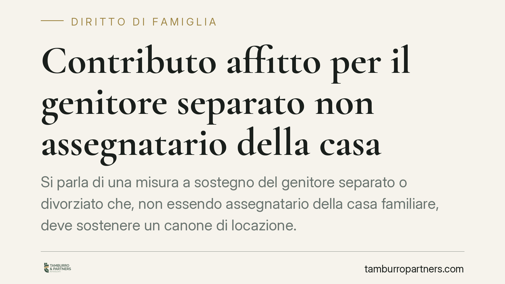

Contributo affitto per il genitore separato non assegnatario della casa
Si parla di una misura a sostegno del genitore separato o divorziato che, non essendo assegnatario della casa familiare, deve sostenere un canone di locazione. La notizia circola con numeri e scadenze precisi, ma molti dettagli richiedono verifica su fonti ufficiali. Ecco cosa conta davvero e come muoversi con prudenza.

Il fatto
Da tempo si discute di uno strumento pubblico destinato al genitore separato o divorziato che, non essendo assegnatario della casa familiare, deve reperire e pagare una nuova abitazione in locazione. L'ipotesi ricorrente è quella di un fondo gestito dal Ministero delle Infrastrutture e dei Trasporti, con un contributo parziale sul canone.
Una premessa necessaria. Alla data di questo contributo, importi, percentuali di copertura, dotazione del fondo e termini di presentazione delle domande circolano su fonti giornalistiche ma non risultano confermati da un testo normativo verificabile in Gazzetta Ufficiale. Per questo non riportiamo cifre o scadenze come dati acquisiti: farlo, su un tema che incide su diritti e scadenze, sarebbe fuorviante.
Inquadramento normativo
La materia si colloca all'incrocio tra due piani distinti.
Il primo è quello della disciplina della separazione e del divorzio (artt. 337-bis e seguenti del Codice civile per l'affidamento e le decisioni sui figli; Legge 898/1970 per il divorzio). È in questa sede che il giudice può disporre l'assegnazione della casa familiare, di norma al genitore con cui i figli convivono prevalentemente. Il genitore che non ottiene l'assegnazione è il cosiddetto *non assegnatario*: è lui il potenziale destinatario di una misura di sostegno alla nuova abitazione.
Il secondo piano è quello di un'eventuale misura di sostegno economico introdotta per legge e resa operativa da un decreto attuativo. Allo stato, il testo definitivo di una simile misura — con requisiti, importi e termini — deve essere riscontrato sulla Gazzetta Ufficiale e sui canali del Ministero competente. Fino a quel momento qualsiasi riferimento numerico va trattato come indicazione provvisoria, non come norma vigente.
Un punto tecnico è però fermo e vale in ogni caso: la qualità di non assegnatario deve risultare da un provvedimento formale (decreto o sentenza che assegna la casa all'altro genitore). Una separazione di fatto, senza provvedimento, non attribuisce questo titolo.
Implicazioni pratiche
Per il genitore separato che paga un affitto, una misura di questo tipo — se confermata nei termini di cui si parla — ridurrebbe in parte il costo abitativo. Ma l'impatto concreto dipenderà da elementi oggi non certi: eventuali soglie ISEE, tetto massimo del contributo, documentazione richiesta e finestra temporale per la domanda.
Va tenuta ferma una distinzione importante. Un contributo sul canone di locazione riguarda chi vive in affitto. Non va confuso con il peso delle rate di mutuo o con le spese di un immobile di proprietà: sono situazioni giuridicamente diverse e, verosimilmente, non tutte coperte dalla stessa misura. Chi è comproprietario della ex casa familiare, o paga un mutuo, dovrà verificare con attenzione se e come rientri tra i beneficiari.
Un'ultima avvertenza: i fondi a dotazione limitata tendono a esaurirsi e a prevedere termini perentori. Per questo la verifica tempestiva delle fonti ufficiali, quando il testo sarà pubblicato, è decisiva.
Cosa fare in concreto
- Reperire il provvedimento di separazione o divorzio e verificare che attribuisca formalmente la casa familiare all'altro genitore: senza questo atto non si è non assegnatari a fini di legge.
- Consultare la Gazzetta Ufficiale e il sito del Ministero delle Infrastrutture per il testo definitivo della misura, con requisiti, importi e scadenze effettive, prima di fare affidamento su cifre di stampa.
- Predisporre per tempo la documentazione reddituale, in particolare l'ISEE aggiornato, che nelle misure di questo tipo è spesso dirimente.
- Conservare il contratto di locazione registrato e le ricevute dei canoni versati, verificando che l'intestazione e la residenza siano coerenti con la propria posizione.
- Distinguere la propria situazione abitativa (affitto, mutuo, comproprietà) e verificare se rientra effettivamente tra quelle agevolate, evitando domande prive dei requisiti.
Si consiglia di non assumere come definitivi importi, percentuali e termini finché non siano confermati dal testo pubblicato in Gazzetta Ufficiale.
Contributo informativo a cura di Tamburro & Partners - Avv. Giuseppe Tamburro. Non costituisce parere legale.
Ogni famiglia ha il suo equilibrio.
Separazione, divorzio, affidamento, assegno: se vuoi un confronto riservato su una specifica situazione, scrivi allo studio. Ti rispondiamo entro un giorno lavorativo.